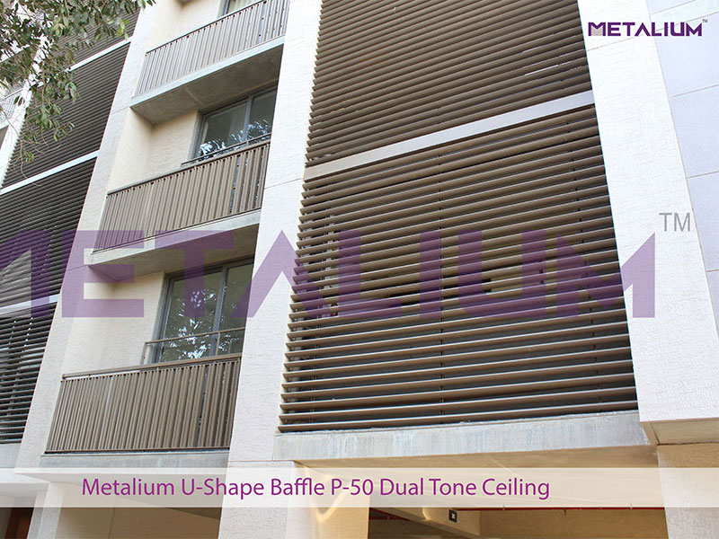

Exterior Louvers
-

V72 Half Oval Shape Cladding
Metalium V72 half oval shaped panel provide an extremely efficient form of solar shading by Aerofoil look.It replace sex truded aluminium section in duct covering and elevation. It is available in a range of sizes and with a choice of finishes to enhance the architectural appearance of a building.
Know More -
U Shape P 50 Louvres
U-Shaped Baffle Box Louvres are an easily mounted and extremely versatile exterior cladding system. U-shaped Box is an economic but long-lasting solution for external cladding. Special unique Powder coating finish on panel is not affected by dirt and humidity. Shapes, colours, materials and technology, Metalium truly offers endless choices.
Know More -
U Shape P 25 Louvres
U-Shaped Baffle Box Louvres are an easily mounted and extremely versatile exterior cladding system. U-shaped Box is an economic but long-lasting solution for external cladding. Special unique Powder coating finish on panel is not affected by dirt and humidity. Shapes, colours, materials and technology, Metalium truly offers endless choices.
Know More -
U Shape P 75 Louvres
Metalium make square edge P-75 series panels, 75 mm Wide * 25mm/50mm depth & 0.45mm / 0.50 mm TCT Galvanized Steel. Panel length is up to approx. 3 mtr. Panels shall be powder coated on visible surface with special Exterior Grade powder to enhance property of Fadedness Resistivity.
Know More -
Multi Baffle U Shaped
U-Shaped Baffle Multi panels with combination of P25 & P75, P50 & 125 or P25 & P50 panels are an easily mounted and extremely versatile exterior cladding system, can be installed horizontally or vertically.
Know More -
Metal Railing
U-Shaped Baffle panels are suitable for outside cladding, railing and elevation with combination of single or multi panels. It can be installed horizontally or vertically. U-Shaped Baffle is an economic but long-lasting solution for external claddings.
Know More -
H-3 Slanted
Metalium Slanted Louvre are highly innovative and gaining popularity in construction to cover the Ducts and used as a Ventilated facade system. The systems are easy and fast to install with variety of carriers with different louvers inclination.
Know More -
SL-5 Slanted
Metalium make 84 R, Round edge panels, 84mm wide x 15mm deep x length up to 5mtr. Formed out of 0.5 mm TCT Galvanized Steel as per IS-513 fixed on Louver carriers.
Know More -
84R Cladding
Linear 84R Cladding is known for its attractive and fluid lines. Panels can be easily removed and replaced by hand allowing easy and full access to services. Their effect is simple but pleasant.
Know More -
38R Cladding
Linear 38R With their rounded edges these panels are easy to set up and take off. Their effect is simple but pleasant. Create countless False Ceiling & Exterior Cladding solutions with Multi space Linear System
Know More